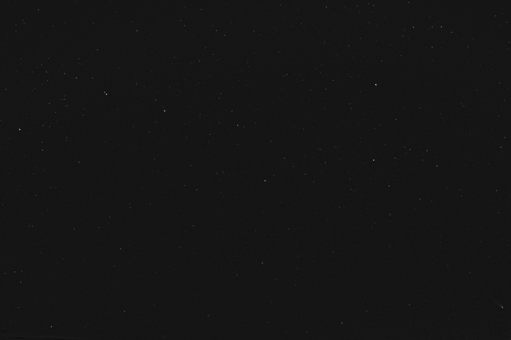
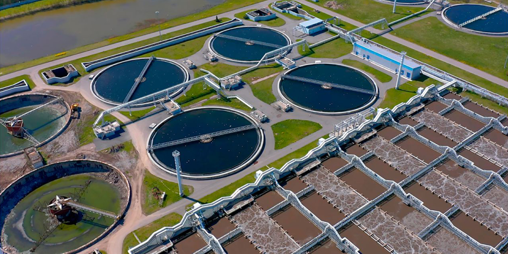
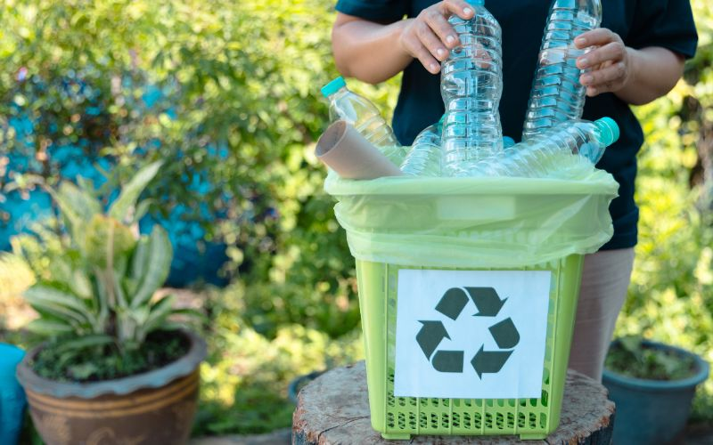
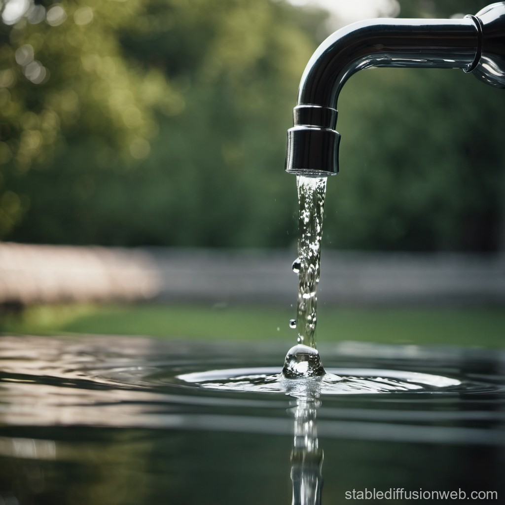
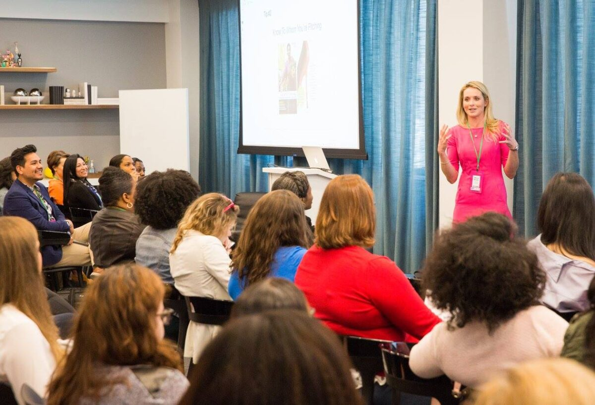
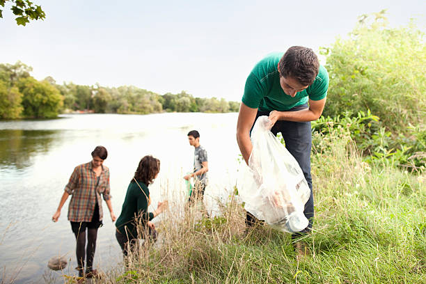

Crystal Clear
OUR WORKS
OUR PLANS
GET INVOLVED
Sign In
Project
Welcome to Crystal Clear, a project dedicated to making our water resources cleaner and safer. Water pollution is a global challenge that affects ecosystems, human health, and future sustainability. Crystal Clear aims to tackle this issue by providing practical solutions and raising awareness about the impact of pollutants on water quality. Through our website, users can explore effective ways to reduce pollution, from water conservation practices to innovative waste management techniques. Join us in our mission to create a healthier, cleaner planet by making every drop of water count.

Know more about our work

Implementing advanced wastewater treatment techniques that reduce pollutants before they reach rivers and oceans, creating safer water systems for everyone.

Minimizing plastic pollution by promoting alternatives, recycling, and proper waste disposal practices to protect aquatic environments from harmful debris.

Encouraging sustainable water use through tips and community resources, helping households and businesses save water and reduce environmental impact.
About Our Plan

Spread awareness on water pollution causes and prevention methods through campaigns, workshops, and resources, empowering communities to protect water resources.

Promote eco-friendly habits like reducing plastic use, conserving water, and supporting green infrastructure to prevent pollution from reaching waterways

Support research and develop new technologies in wastewater treatment, making clean and safe water accessible to more communities.

Get Involved
Join us in the mission to reduce water pollution by making a donation. Your contribution will support clean-up events, educational outreach, and the development of sustainable water management practices. Every donation helps create cleaner, safer water sources for communities and ecosystems alike. Together, we can make a meaningful impact—thank you for your support!

Donate
Crystal Clear
Data and information provided by the EPA and WHO.
Join us in protecting our waters Donate Us
© 2024 Clean Waters Initiative. All rights reserved.